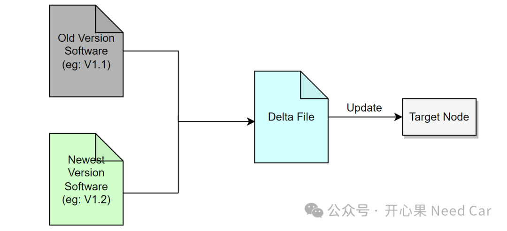
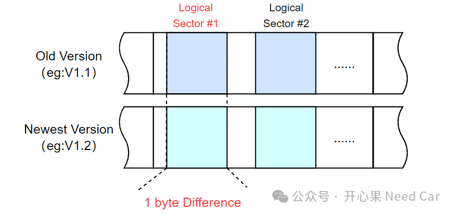

开心果 Need Car · 2024-06-18T06:50:00+08:00 · 微信原文
1、什么是差分升级

2、差分方案的使用场景
一般来说，当一个程序的体量（Size）不大或者软件更新耗时不大时，没有必要使用此方案。因为，对体量相对较小的软件使用差分升级方案，节省的升级时间并不明显。一般来说，需求会给出这样的约束：如果更新程序体量＞10Mbyte或者更新时间＞10min时，可使用差分升级方式。而且，为了更进一步的提高升级效率，可以对差分的升级包进行压缩处理（compression）。
1、擦除的物理内存区大小
一般来说，软件程序和常量会存放在非易失的内存区，eg：PFlash。而PFlash的最小擦除单位受限于芯片约束，eg：英飞凌TC3xx要求：PFlash的最小擦除单位是16 KByte（one logical sector）；瑞萨RH850 F1KM要求：Code Flash的最小擦除单位是8 KByte或者32 KByte。
所以，这也就意味着：同一个逻辑扇区上，新版本软件相对于旧版本软件，即使更新了1 byte，整个逻辑扇区（eg：下图的Logical Sector #1）也必须擦除后重新刷写（Program），示意如下：

所以，如果软件程序本省不大（eg：1MByte以内），使用CAN或者更高速率总线通信，整个刷写本身耗时不多，因此，也就没有必要使用差分升级方案。如果对体量小的软件程序使用差分方案升级，考虑差分算法、压缩算法（可选）等操作，整个流程的升级时间可能会大于没有差分升级的方案。
所以，在讨论差分升级方案能否提升升级效率时，我们需要清楚：自身项目使用此方案的可行性。比如：软件大小，软件更新后的差异性多少等。如果差分升级方案不可行，为了提高软件的刷写效率，也可以考虑并列刷写（Parallel Program）、队列刷写（Queue Program）、静默刷写（Silent Program）等升级方案。
往期精彩回顾